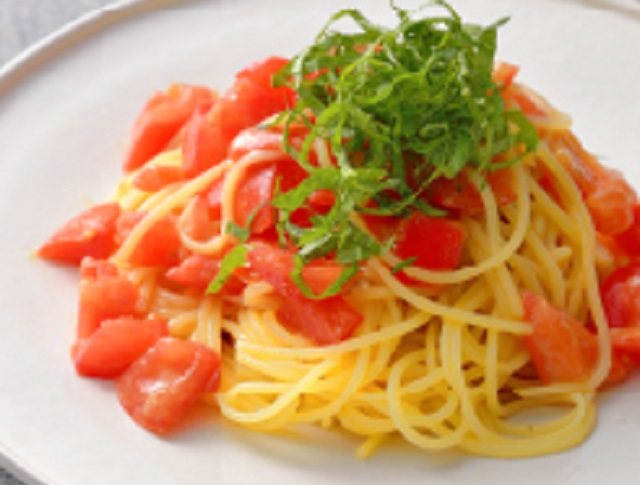

トマトと梅の冷製パスタ

梅干しの酸味がさわやか。青じその香りをアクセントに
材料（２人分）
| 材料 | 分量 |
|---|---|
| スパゲッティ | 160g |
| トマト（フルーツトマトなど） | 3個 |
| 梅干し | 2個 |
| 青じそ | 6枚 |
| （Ａ）オリーブ油 | 大さじ３ |
| （Ａ）塩、こしょう、おろしにんにく |
作り方
 ポイント
ポイント
トマトに相性のいい梅干しを合わせて、フルーティーな甘ずっぱさが楽しめる夏のパスタに。青じそをトッピングして、香りも豊かなひと皿に仕上げます。
- トマトは小さめの乱切りにする。梅干しは種をとってたたく。合わせてボウルに入れ、Aを加えて混ぜ、冷蔵庫で30分ほど冷やす。
- スパゲッティは塩（分量外）を加えた湯でゆでる。ゆで上がったら冷水にとって冷やし、しぼるようにして水けをしっかりととる。
- 1に2を加えて混ぜ、せん切りにした青じそをのせる。
参考にしたサイトは こちら